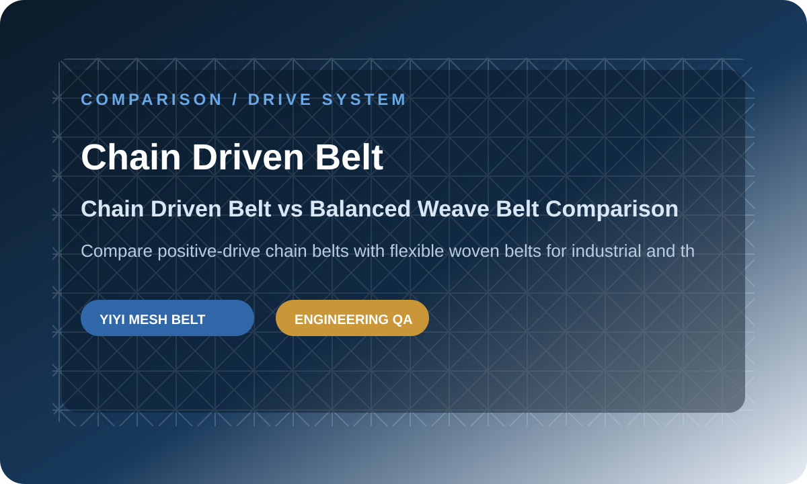
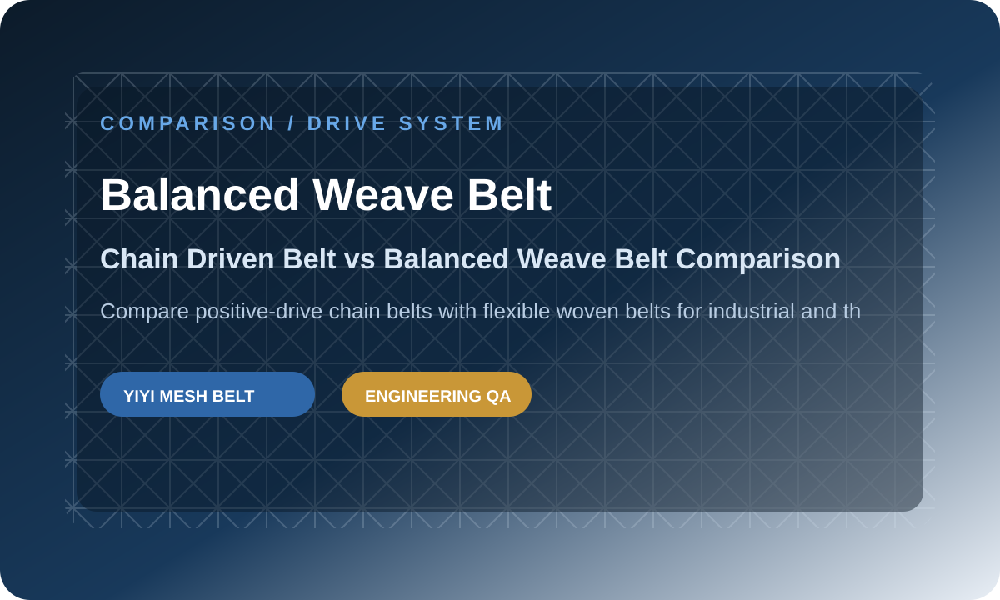
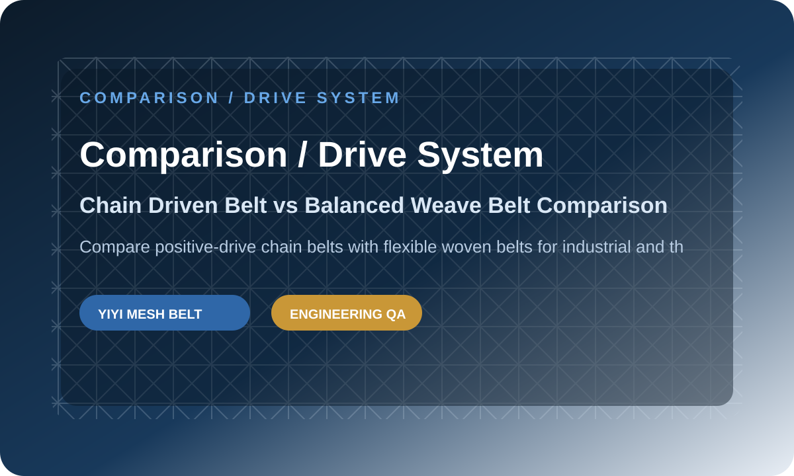

Chain Driven Belt vs Balanced Weave Belt Comparison
Compare positive-drive chain belts with flexible woven belts for industrial and thermal lines.
Direct Answer
A chain driven belt is better when positive engagement, heavy load, and accurate tracking are required. A balanced weave belt is better for flexible conveying, airflow, heat transfer, and continuous processing. The best choice depends on load, temperature, product support, drive method, and maintenance expectations.
This article explains the decision from a practical engineering view so buyers can prepare a clearer RFQ and avoid mismatch before production.



What is the practical difference for buyers?
Chain Driven Belt and Balanced Weave Belt may both appear suitable at first, but the practical difference is how each structure behaves under load, drive engagement, cleaning, temperature, and long-term maintenance. Buyers should not choose only from a catalog photo. A belt that looks stronger may create unnecessary cost, while a belt that looks simple may not survive the actual line. The correct comparison starts from the working condition and then checks the belt geometry, material, edge, and drive details.
How should an OEM or distributor make the decision?
OEM builders and distributors should compare risk, not only price. The right belt is the one that supports stable running, repeat ordering, and clear replacement logic. If the line needs positive engagement, sprocket matching becomes critical. If the line needs airflow or drainage, open area matters. If the line runs in freezing or high heat, material and dimensional stability become more important. My Insights: In comparison and decision projects, we usually do not judge the belt only from the product name. We first check the working condition, the drive method, and the failure risk. When a buyer sends clear photos, drawings, or old belt measurements, we can often find the real risk before production starts. This saves time for OEM teams, distributors, and factories that need stable repeat supply.
What information prevents the wrong choice?
The most useful information includes application photos, drawings, belt pitch, overall width, usable width, rod diameter, wire diameter, edge design, sprocket details, load, temperature, speed, and cleaning method. If the old belt failed, close-up photos of the failure point are very useful. Many buyer mistakes happen because the supplier receives only one photo and one size. That is not enough for a safe engineering decision when the belt must run inside a production line for months or years.
What specifications should be compared?
| Parameter | Engineering note |
|---|---|
| Chain driven focus | Positive sprocket engagement and strong edge control |
| Balanced weave focus | Flexible woven surface for airflow and heat transfer |
| Typical industries | Industrial systems, ovens, dryers, heat treatment |
| Buyer risk | Wrong drive method can cause jumping, wear, or tracking problems |
| Best RFQ data | Chain pitch, sprocket drawing, load, temperature, belt width |
What photos or drawings should buyers send?
- Overall belt photo and close-up photo of the edge.
- Pitch, width, rod diameter, wire diameter, and edge structure measurement.
- Sprocket, drum, shaft, or drive engagement photos.
- Application photos showing product load, temperature, washing, or turning path.
- Failure point photos if the current belt is broken, deformed, stretched, or unstable.
Recommended internal links
FAQ
Can I choose the belt only by photo?
Photos help, but reliable selection also needs pitch, width, material, load, temperature, and drive information.
Should I replace sprockets together with the belt?
If sprocket wear, pitch mismatch, or jumping is visible, belt and sprocket matching should be reviewed together.
What should I send for a fast quotation?
Send drawings, old belt photos, dimensions, application details, material request, load, speed, temperature, and drive details.
Conclusion
My Insights: In final RFQ review projects, we usually do not judge the belt only from the product name. We first check the working condition, the drive method, and the failure risk. When a buyer sends clear photos, drawings, or old belt measurements, we can often find the real risk before production starts. This saves time for OEM teams, distributors, and factories that need stable repeat supply.
The best next step is simple: send your drawing, old belt photos, and working condition. We can confirm the belt family, material direction, key dimensions, and quotation path before production.